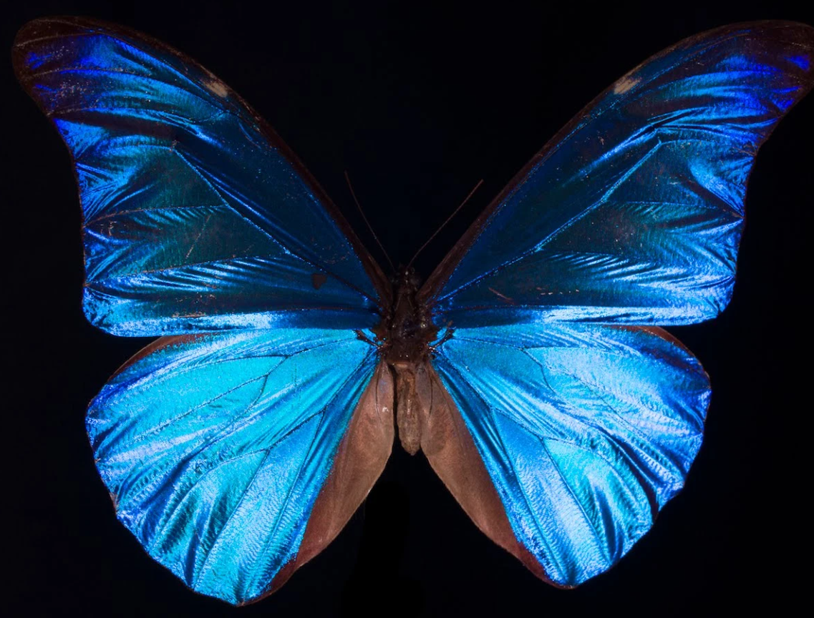
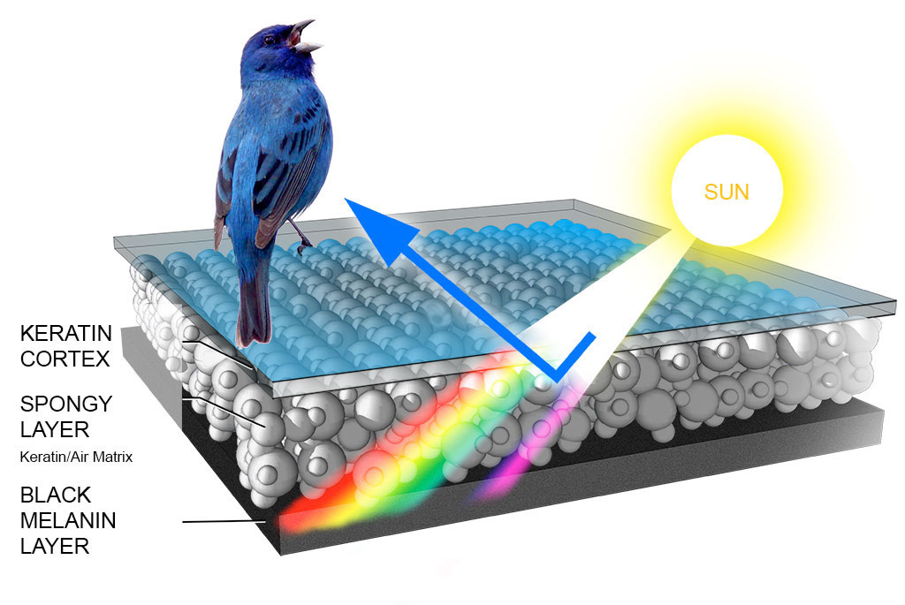

Contrary to pigment-based coloration, blue structural coloration, which results from light scattering, is less common in nature.
- A few plants and animals use structural color to give themselves different hues by changing how light reflects off of them. Contrasted with pigmentation-based coloration, which occurs when an animal or plant acquires a particular hue as a result of pigments (such as paint) in its skin or leaves,
- An organism's physical structure, as opposed to pigments, can provide a sort of color called structural coloration. Particularly blue structural coloring is uncommon in nature since it needs certain structural configurations to be produced. On the other hand, pigment-based color is far more prevalent and is created by pigments that reflect some wavelengths of light while absorbing others. This indicates that while blue structural coloring is more challenging to create and sustain, it is less common in nature than pigment-based color.
- One example of structural coloring is the blue hue of some butterfly wings. The color blue is caused by the precise way small structures on the surface of the wing scatter blue light.
- In nature, structural coloring is more uncommon than pigmentation-based color because it is more difficult to create. While pigmentation-based coloring may be produced by simply adding pigments, structural coloration frequently requires the formation of intricate structures, such as the scales on a butterfly's wing.
- When a wall is painted with various colors of paint, the pigments in the paint are what give the paint its color. This is how pigmentation is conceived of. Contrarily, structural coloring is comparable to creating a wall out of different-shaped bricks placed in a precise order to produce varied hues. In this instance, the hue is a result of how light reacts with the bricks' structure. In contrast to pigmentation, structural coloring manipulates the physical structure to generate color rather than depending solely on pigments. It is an uncommon and sophisticated process.

